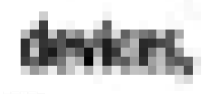
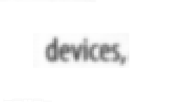
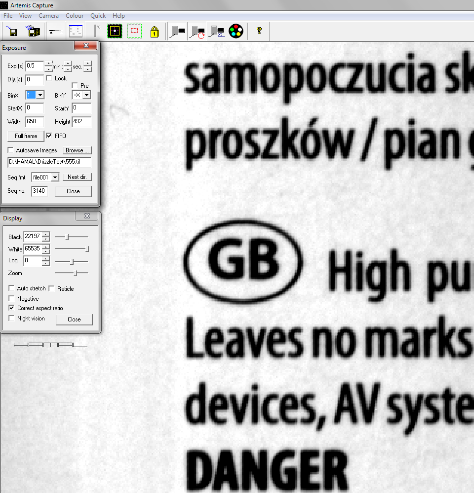
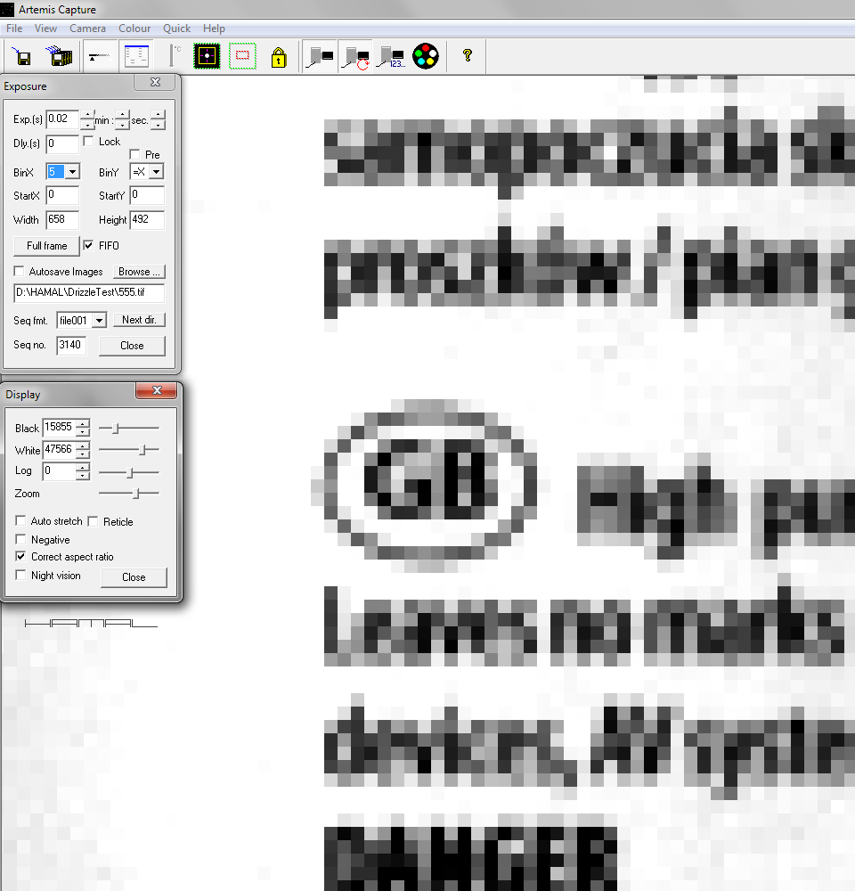
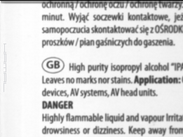
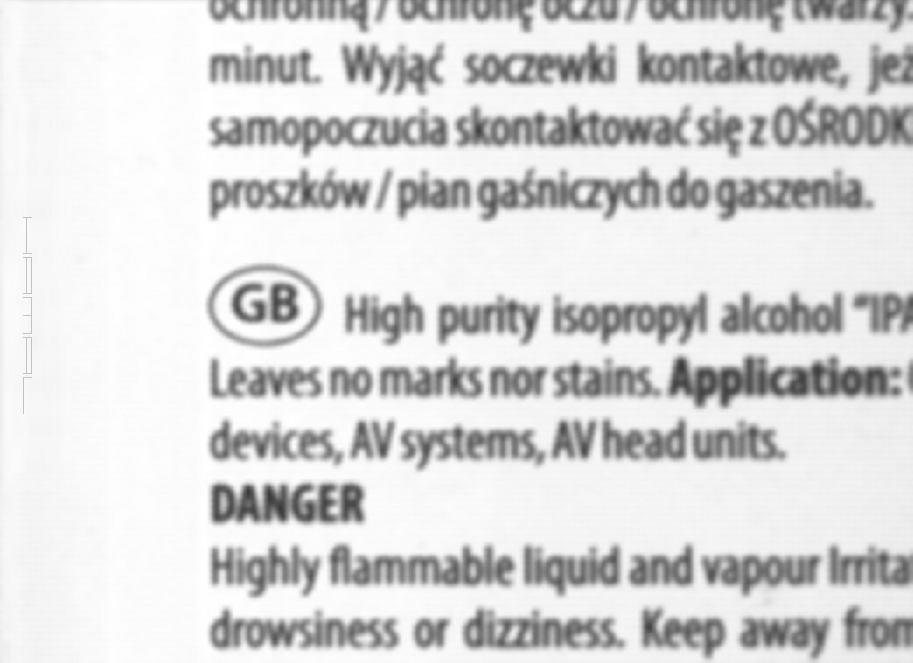
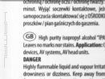
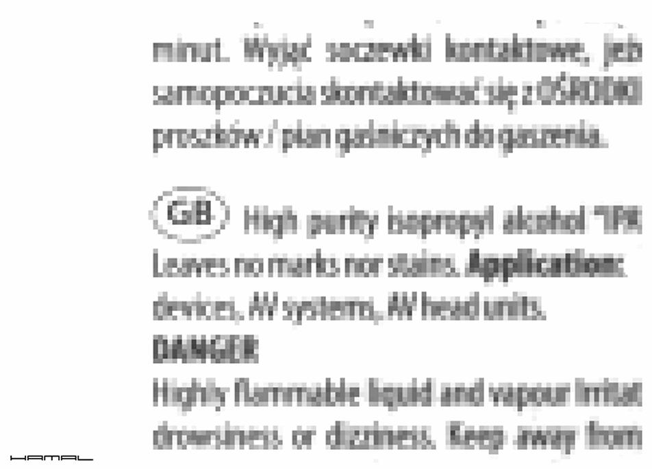

.
czyli o tym, jak Drizzle odzyskuje utraconą rozdzielczość
15-09-2019
|
Jak działa Drizzle i czy działa w ogóle ? Zobaczcie :) WSTĘP Kto się pokusi o odczytanie tego napisu?  3000 klatek później...  Z czym mamy do czynienia? Pierwszy obrazek to jedna klatka/jedno zdjęcie napisu w rozdzielczości tak niskiej, że uniemożliwiającej odczytanie liter. Drugi obrazek to stack Drizzle 3000 zdjęć podobnych do pierwszego, tylko że przy akwizycji/fotografowaniu każde kolejne z nich było o odrobinkę przesunięte względem fotografowanego napisu, więc mimo że napis nadal był na nich nieczytelny, Drizzle stackując rozpoznawało te mikro przesunięcia o pół, o ćwierć pixela i tak wyrównywało względem siebie 3000 klatek, że wydobyło z nich informacje o rzeczywistej naturze fotografowanych kształtów. OPIS Sprzęt: Teleskop Bresser Messier 76/350 Do takich testów należy bezwzględnie stosować optykę zwierciadlaną z uwagi na fakt braku aberracji chromatycznej. Kamerka Atik Titan CCD Kamerka posiada możliwość Bin-owania pixeli, czyli łączenia ich w jeden większy. I tak dla przykładu Bin2 to kwadrat 2 na 2 pixele, czyli łącznie 4. Bin3 to kwadrat 3 na 3 pixele, czyli łącznie 9. Bin4 to kwadrat 4 na 4 pixele, czyli łącznie 16, powstaje nam jeden superwielki pixel składający się z 16 pixeli, ale pracujących jako jeden. Czemu o tym piszę? Bo robiąc poniższy eksperyment, miałem dwie opcje. Opcja pierwsza. Zrobić zdjęcia napisu z odległości umożliwiającej kamerce ładne pokazanie detalu liter, a następnie odsuwać ją tak długo aż napis stanie się dla niej zbyt mały i literki będą widoczne jak na pierwszym obrazku niniejszego opracowania. Opcja druga. Kamerkę mieć cały czas w tej samej odległości od fotografowanego napisu a zmieniać parametr Bin, w ten sposób symulować zmianę stosunku rozmiaru napisu do rozmiaru pixeli. Wybrałem opcję drugą, łatwiej było modelować test. Wartość Bin musiałem dobrać tak, aby była na tyle wysoka, by fotografowany napis został solidnie graficznie upośledzony w zakresie odwzorowania, ale jednocześnie nie chcąc przesadzić, na tyle niskie, by była jakaś szansa dla Drizzle coś zdziałać. Tą wartością okazało się bin 5, dlatego ją zastosowałem i jak już widzieliście na pierwszym obrazku, czyni ono sporą demolkę w kształcie liter. Anatomia badania: Teleskop z podpiętą doń kamerką leży na biurku i fotografuje z pewnej odległości etykietę z napisami. Na początek poniżej obraz z kamerki z wartością Bin 1, abyście mogli zobaczyć, na co patrzymy i poczuli zaraz różnicę. Rozdzielczość przyzwoicie wywiązuje się z odwzorowania obrazu. Obraz w powiększeniu 1500% .  Poniżej, dla porównania ten sam obraz, ale z wartością Bin 5 i to właśnie dla testu Drizzle taki obraz jest potrzebny, no bo przecież zadaniem rzeczonego Drizzle jest odzyskiwać dla nas (utracone przez niedobór rozdzielczości obrazowania) detale :) Obraz w powiększeniu 1500% .  Poniżej przykładowa klatka w skali 1:1 (100%) . Oraz w powiększeniu 700% . Jednak, aby Drizzle miało z czego czerpać informacje, nie wystarczy mu zaaplikować 3000 identycznych klatek/zdjęć jak powyżej, należy mu zapewnić migrację obrazu na poziomie subpixelowym. W naturze ten efekt uzyskujemy w sumie niechcący, głównie poprzez niedokładności prowadzenia teleskopu oraz seeing, ja w moim teście tak drobną migrację obrazu uzyskałem uciskając delikatnie biurko z zestawem optycznym. Przykład poniżej. Powiększenie 400% | subpixelowa migracja obrazu .  Taki materiał wrzucamy do programu stackujacego obsługującego funkcję Dizzle, aby uzyskać wynik jak poniżej. Drizzle 2x .  Prawda, że Drizzle ładnie się spisało :) Wystarczy porównać litery i słowa z trzema poprzednimi obrazkami. Powiększmy, aby lepiej widzieć detale. . Konkluzja? Drizzle naprawdę działa !! Drizzle wymyślono dla zwiększenia rozdzielczości obrazów HST ponad natywną rozdzielczość zestawu, amatorzy najczęściej stosują je do nadpróbkowanych obrazów (czyli takich gdzie rozdzielczość matrycy przekracza rozdzielczość podawanego obrazu), co nie było założeniem twórców, ale jak widać w powyższym teście, pracując zgodnie ze swoim przeznaczeniem na podpróbkowanym materiale (czyli takim gdzie rozdzielczość matrycy jest mniejsza niż rozdzielczość podawanego obrazu) w teście dla utrudnienia jest dużo mniejsza, swoją rolę czyni należycie :) Obrazy poddawane temu algorytmowi powinny wyglądać następująco ... . a nie tak ... .  A co by było, gdyby, zestackować prezentowany materiał bez funkcji Drizzle? Jaki będzie efekt? Ano taki. .  W powiększeniu 700%. . Dla lepszego porównania ponownie wynik z zastosowania algorytmu Drizzle. . A skoro już w dziedzinie "pod" i "nad" próbkowania oraz rozdzielczości jesteśmy, warto, abyście rzucili okiem TU. Na koniec Wiele razy używałem zwrotu, migracja subpixelowa, czyli taka, która odbywa się w przedziale ułamków pixeli, taka wymagana jest do skutecznego zastosowania Drizzle. Polega ona na przesunięciach obrazu o np: 0,3 pixela; 0,7 pixela; 1,2 pixela; 2,1 pixela; 3,9 pixela, nie musi ona koniecznie oznaczać wartości 0,1 pixela, 0,3 pixela, 0,7 pixela, 0,5 pixela, 0,4 pixela. I to jest właśnie taka migracja jak poniżej, wcześniej już Wam prezentowana. Ale skąd wiadomo, że ona jest subpixelowa, a nie unipixelowa? Przecież Wy tam widzicie, jak skacze po całych pixelach jak nic :) A no stąd wiadomo, że gdyby ona była unipixelowa i wynosiła np 1,3,1,2,4,2,3 to wynik migrowania obrazu by był taki jak poniżej. Taka pełnopixelowa migracja, jak widzicie, nie wnosi nic nowego, jedynie odwzorowuje ten sam upośledzony rozdzielczościowo układ obraz-pixele.  
|